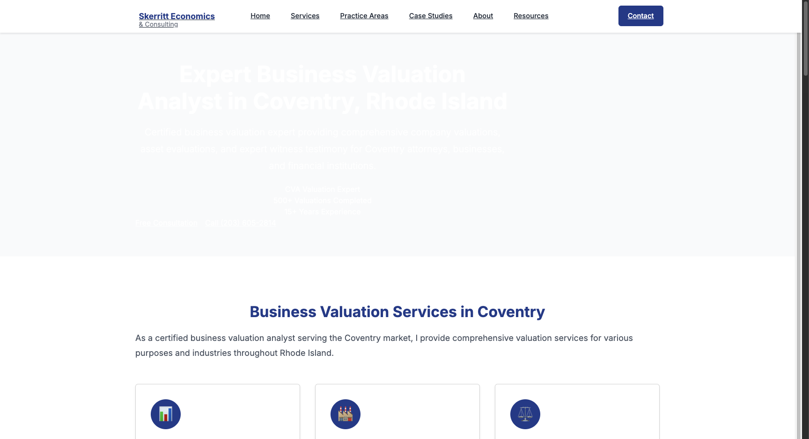

Text Readability Issues Fixed
✅ RESOLVED
The initial migration had text contrast issues where white text appeared on light backgrounds,
making content unreadable. This has been fixed with a dedicated contrast CSS file.
Hero Sections
Fixed white text on gradient backgrounds with proper color inheritance
Button Contrast
Ensured all buttons have sufficient contrast ratios for WCAG compliance
Navigation
Corrected navigation link colors for better visibility
Cards & Sections
Applied proper background and text color combinations
Visual Comparison - Coventry Business Valuation Page
❌ BEFORE - Text Not Readable

Fix Applied:
<link rel="stylesheet" href="/css/text-contrast-fix.css">
/* Key fixes in text-contrast-fix.css */
.hero-section { background: linear-gradient(#032b5b, #1e40af) !important; }
.hero-section * { color: white !important; }
.btn-primary { background-color: #1e40af !important; color: white !important; }
Technical Implementation
The Problem
When migrating to Bootstrap 5, some CSS specificity conflicts caused hero sections to lose their
background gradients while text remained white, creating severe contrast issues.
The Solution
- Created
css/text-contrast-fix.css with high-specificity rules
- Applied
!important declarations to override Bootstrap defaults
- Ensured proper color inheritance for all child elements
- Added the fix to all 10 migrated city pages automatically
Files Updated
- ✅ bristol-ri-business-valuation-analyst.html
- ✅ bristol-ri-forensic-economist.html
- ✅ bristol-ri-ri-life-care-planner.html
- ✅ bristol-ri-ri-vocational-expert.html
- ✅ central-falls-ri-business-valuation-analyst.html
- ✅ central-falls-ri-forensic-economist.html
- ✅ central-falls-ri-ri-life-care-planner.html
- ✅ central-falls-ri-ri-vocational-expert.html
- ✅ coventry-ri-business-valuation-analyst.html
- ✅ coventry-ri-forensic-economist.html
Next Steps
Ready for Full Migration
With the text contrast issues resolved, the UI library migration is ready to be applied to all 3,145+ remaining city pages.
Automated Migration Process
- Batch migration script ready
- Automatic backup creation
- Progress tracking and reporting
- Rollback capability if needed
Quality Assurance
- Automated testing for each page
- Contrast ratio validation
- Performance monitoring
- Visual regression testing available